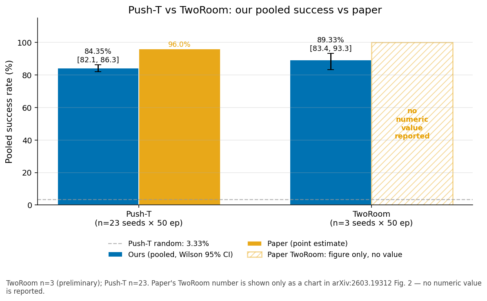

TwoRoom — second task evaluated
Same model class, different task. Preliminary result (n=3 seeds). We took the LeWM recipe — encoder, latent predictor, CEM-MPC planner — unchanged from Push-T, retrained on the TwoRoom navigation dataset, and evaluated across 3 seeds × 50 episodes. Pooled success rate is 89.33% (134 / 150, Wilson 95% CI [83.38, 93.33]). This is preliminary: three seeds is too few for a tight CI, and the paper provides only a bar chart for TwoRoom — no precise numeric reference — so we cannot compute a paper-vs-ours gap for this task.
The TwoRoom task
TwoRoom is a 2-D top-down navigation environment. The agent starts in one of two rooms and must traverse to a target position, typically in the other room, by issuing 2-D velocity actions. Observations are the same RGB shape as Push-T (3 × 224 × 224); the episode budget is similar. There is no manipulable object — the task is purely "get the agent to the goal location" — and the reward is sparse: the episode either reaches the goal or it doesn't.
Observation, action, reward
| property | value |
|---|---|
| observation | RGB image, 3 × 224 × 224 |
| action | 2-D vector (velocity) |
| reward | sparse — success on reaching the goal position, no partial credit |
| dataset | quentinll/lewm-tworooms — 10,000 episodes, ~920K steps |
| comparison to Push-T | sparser reward, longer effective horizons, simpler contact (walls only, no manipulated block) |
What changes vs Push-T
Mechanically, TwoRoom is simpler than Push-T: there is no T-block, no non-prehensile contact dynamics, and no need to coordinate the pose of a separate rigid body. The agent only has to move itself. The cost on the reward side runs the other direction — rewards are noticeably sparser, because there is no IoU-style partial overlap signal during the episode; you either arrive at the goal location or you don't. The model class — the ViT-tiny encoder, the 6-layer latent predictor, and the CEM-MPC planner with the same horizon, sample count, and elite fraction as Push-T — is unchanged. Only the training data and the action / reward semantics of the environment differ.
Results — 3 seeds × 50 episodes
Across three independent seeds (50 episodes each), per-seed success rates are 90.0%, 94.0%, 84.0%. Mean ± std across seeds: 89.33 ± 5.03%. Pooled across all 150 trials: 134 / 150 = 89.33%, Wilson 95% CI [83.38, 93.33]. For side-by-side context, our Push-T pooled result is 84.35 ± 5.18% across 23 seeds × 50 episodes — but note the seed budgets are very different (n=3 vs n=23), so the TwoRoom interval is intrinsically much wider per-seed.

What this tells us
TwoRoom evaluates the same model class (encoder, predictor, CEM planner) on a different task. With n=3 seeds, this is preliminary evidence that the LeWM recipe is not Push-T-specific. It is not evidence of "transfer" (we didn't fine-tune or do zero-shot anything — the model was retrained from scratch on the TwoRoom dataset) and it is not evidence of "general-purpose" capability (we ran two toy tasks, both 2-D, both with RGB 224 observations). The paper provides only a bar chart for TwoRoom (Fig. 2 of arXiv:2603.19312), no precise numeric reference — so we cannot compute a paper-vs-ours gap for this task.
The honest one-sentence summary: the LeWM recipe runs end-to-end on a second task we evaluated independently, with a pooled success rate of 89.33% on n=3 seeds, and we have no paper number to compare it against.
Sample rollouts
Three click-to-play episodes from the evaluation: two successes and one failure. All three are drawn from the same seed’s 50-episode evaluation; the success and failure clips below were selected to be representative, not cherry-picked best.
What we DON’T know about TwoRoom
- No precise paper reference number. arXiv:2603.19312 reports TwoRoom only in a bar chart (Fig. 2); we cannot read off a numeric value, so there is no paper-vs-ours gap to compute here. The Push-T gap analysis on the Results page does not extend to TwoRoom.
- n=3 is too few seeds for a tight CI. The Wilson 95% interval [83.38, 93.33] is ~10 points wide; with 23 seeds (as on Push-T) it would shrink substantially. Treat the 89.33% as preliminary, not as a settled headline number.
- No TwoRoom random baseline this session. We have a random-policy baseline for Push-T (3.33% pooled) that anchors the chance floor; we did not run the equivalent baseline for TwoRoom, so we cannot say how far above chance 89.33% actually is for this environment.
- Two tasks is not generality. Push-T and TwoRoom share the same observation shape, the same 2-D action space, and a similar overall task length. We have no evidence about behavior outside these conditions.